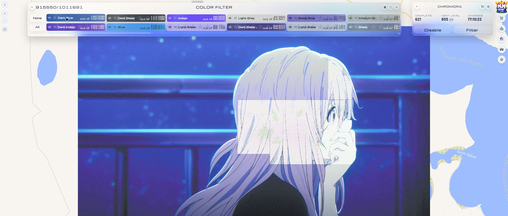
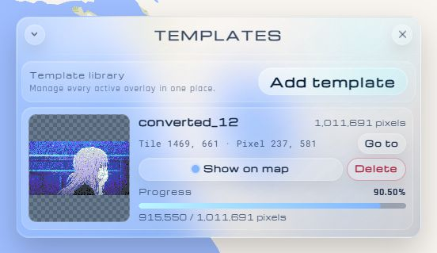
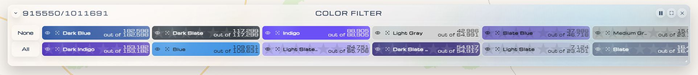
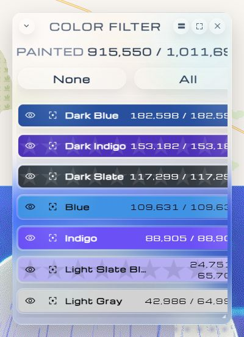
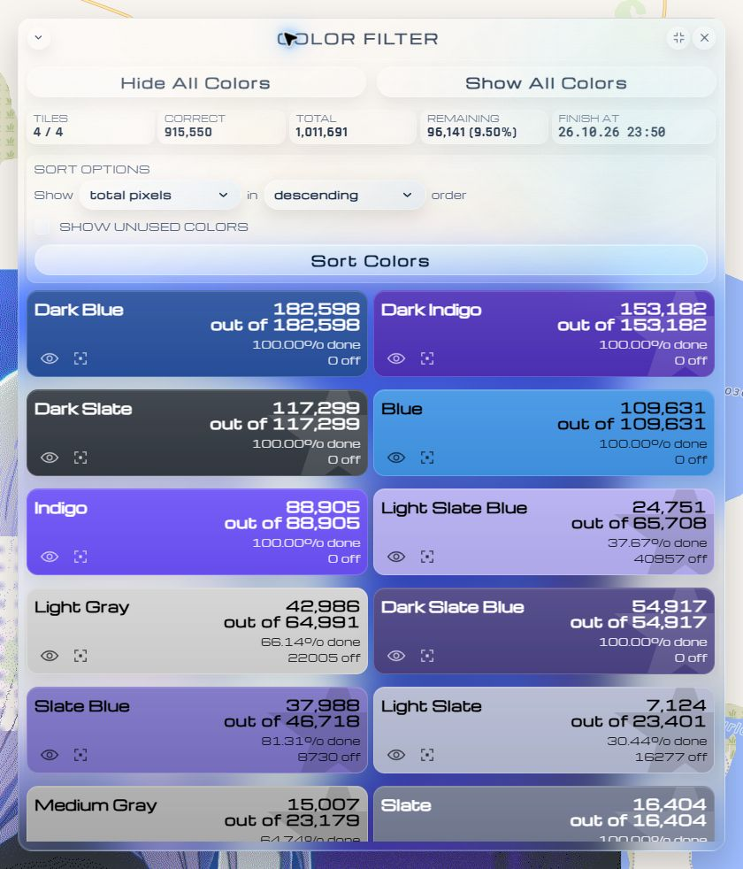
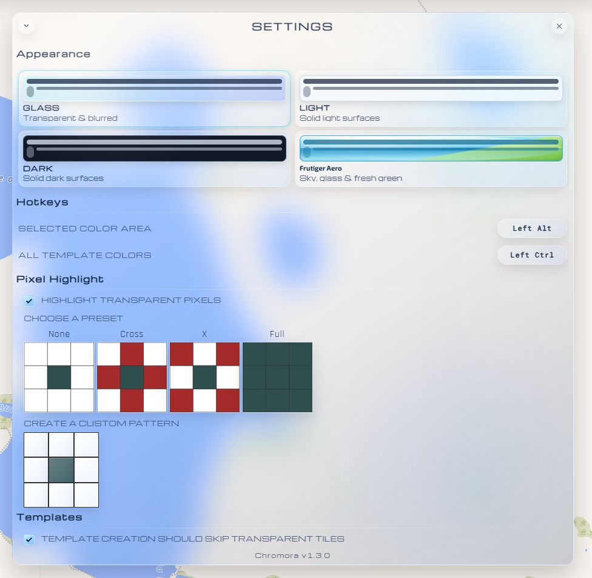

A brighter workspace for Wplace
Make something
colorful.
Your artwork. Your colors. Your little corner of the world. Bring it all together with Chromora.
Free, open source, and made for your browser.
Less searching.
More creating.
- Your templates, together
- Every missing pixel, visible
- Four ways to feel at home
A place for every pixel
Big ideas.
Beautifully small steps.
Keep an eye on your progress, find your next color, and pick up where you left off. Chromora sits right on the Wplace map.

A window that fitsMove, resize, or tuck the windows away. Their positions are remembered.
Your progress, in viewSee droplets, the next level, and your charge timer in one small window.
Easy on your mapKeep the artwork visible while you check the details that matter.
01 Bring your ideas along
One map.
Room for every idea.
Keep several templates in the same library. Each has its own preview, coordinates, and progress, so you always know where things stand.
- Jump to any artwork with Go to.
- Show or pause each template whenever you like.
- Add another image without replacing your collection.
{kind=link}

Put your artwork in its place.
Choose an image, click its top-left pixel on the map, then use Use last map click. Prefer exact numbers? Enter the tile and pixel coordinates yourself.
02 Find your next color
A clearer picture.
One color at a time.
Hide colors you’re not working on, check what’s finished, and sort by what’s left. Give the Color Filter as much—or as little—room as you need.
{kind=link}

A slim strip of colors that leaves the canvas wide open.
{kind=link}

A compact checklist beside the artwork. Same colors, a different fit.
{kind=link}

Spread out, compare progress, and bring the colors with the most work to the top.
03 See what needs a little love
Spot the gaps.
Make the details shine.
No more hunting pixel by pixel. Choose a color and let clear outlines show you where to work next.

Find a color that’s out of place.
Click a color’s highlight control once to find painted pixels that don’t match.

Find the spaces waiting for you.
Click again to show missing pixels. One more click turns the highlight off.
Make the markers your own with highlight presets and a custom 3 × 3 pattern in Settings.
On the right side of your map


Real buttons, shown up close.
Keyboard shortcuts shown are the defaults.
A helping hand, when you need it
Choose a patch.
Make it yours.
Open Wplace’s paint panel, then choose an area button on the right side of the map. Drag over empty pixels to prepare a draft using your available charges.
- Top button: use your currently selected Wplace color.
- Bottom button: use all the colors from your template.
Review your draft, then press Paint yourself. You can change both shortcuts in Settings.
A fresh view
Choose your
happy place.
Four themes. The same familiar tools. Go clear, keep it simple, dim the lights, or bring back the bright optimism of the early 2000s.
Exo 2 and PT Sans, built right in.
{kind=link}

Ready when you are
Your next little
masterpiece starts here.
A browser, a userscript manager, and an idea. That’s all you need to get going.
- 01
Get a userscript manager.
Install Tampermonkey for your browser. It runs Chromora on Wplace.
Get Tampermonkey - 02
Add Chromora.
Open the latest release, choose Chromora.user.js, then confirm the install in your manager.
Download Chromora - 03
Meet you on the map.
Open or refresh Wplace, find Chromora, and add your first image from Templates.
Open Wplace
Chromora is free and open source. Choose Chromora.user.js from the latest release to install it.
A few good things to know.
Does Chromora paint for me?
Chromora can help prepare a local paint draft from your template. You review that draft and press Wplace’s Paint button yourself.
Can I use more than one template?
Yes. Add multiple images to your library, show or pause them individually, and jump straight to each one. Turning a template off keeps it out of the map overlay, color statistics, and area drafting.
Where are my templates and settings saved?
They are saved in your userscript manager’s storage in your browser. Keep a backup of your original images. Removing the script’s stored data removes its saved setup.
What if something looks wrong?
Check that you have the latest Chromora release and refresh Wplace. If the problem continues, open an issue on GitHub with what happened, your browser, and a screenshot if it helps.
The world could use
a little more color.